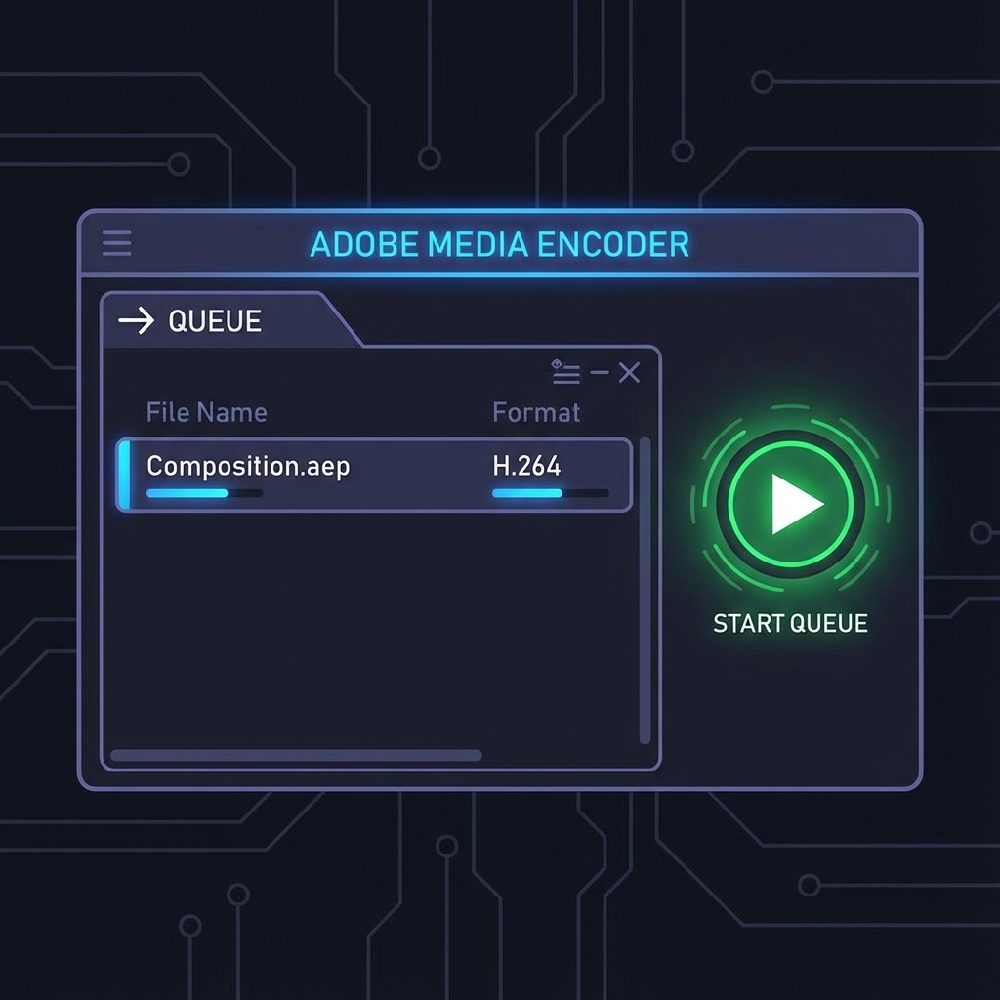

🎯 このミッションのゴール
YouTubeの冒頭で流れるような、「かっこいいロゴアニメーション（モーションロゴ）」を作ります。 キーフレーム、マスク、テキストアニメーション、エフェクト…全てのスキルを総動員して挑みましょう！
🎬 どんな時に使うの？（利用シーン）
「3Dレイヤー」は、こんな場面で必須です！
- 奥行きのあるダイナミックなスライドショー
- 床に反射するロゴ
- カメラが飛び回るような演出
🛠️ 制作ステップ
1企画・構成
まずは紙にアイデアを描こう。
- テーマは？（クール、ポップ、シンプル？）
- どんな動き？（横から出てくる、弾む、光る？）
- 文字は？（自分の名前、チャンネル名）
2アニメーション制作
Aeで形にしていきます。
- 動きをつける：ロゴ（文字）の位置やスケールを動かす（F9で滑らかに！）。
- 演出を加える：マスクで出現させたり、3Dで回転させたり。
- エフェクト追加：「グロー（発光）」や「ブララー（移動）」を入れるとプロっぽさUP！
3書き出し（Media Encoder）
Aeから直接MP4を書き出すには、Adobe Media Encoderを使うのが一般的です。

- コンポジションを選択して、「ファイル」→「書き出し」→「Adobe Media Encoder キューに追加」。
- Media Encoderが起動したら、形式が「H.264」になっていることを確認。
- 右上の緑の再生ボタン ▶ を押して書き出し開始！
CONGRATULATIONS!
全コース修了です！お疲れ様でした！
あなたはもう「動画クリエイター」の第一歩を踏み出しました。
動画の世界は無限大です。
これからもたくさん作品を作って、世界を驚かせましょう！
😱 困ったときは？ (トラブルシューティング)
3Dにするアイコンがない
タイムラインパネル左下の「スイッチ/モード」切り替えボタンを押して、キューブアイコンを表示させましょう。
Z軸（奥行き）が動かない
3Dレイヤーモードになっていない可能性があります。キューブマークがONか確認を。